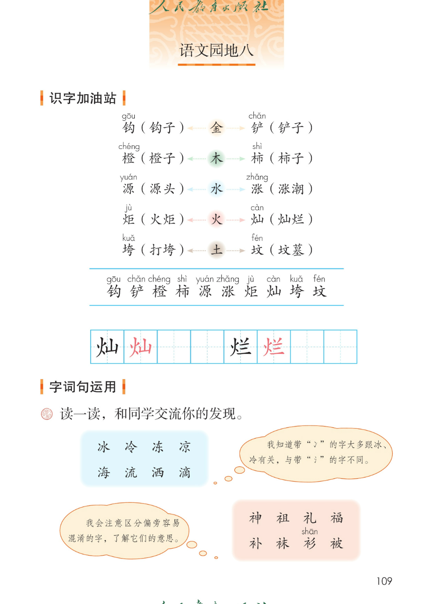
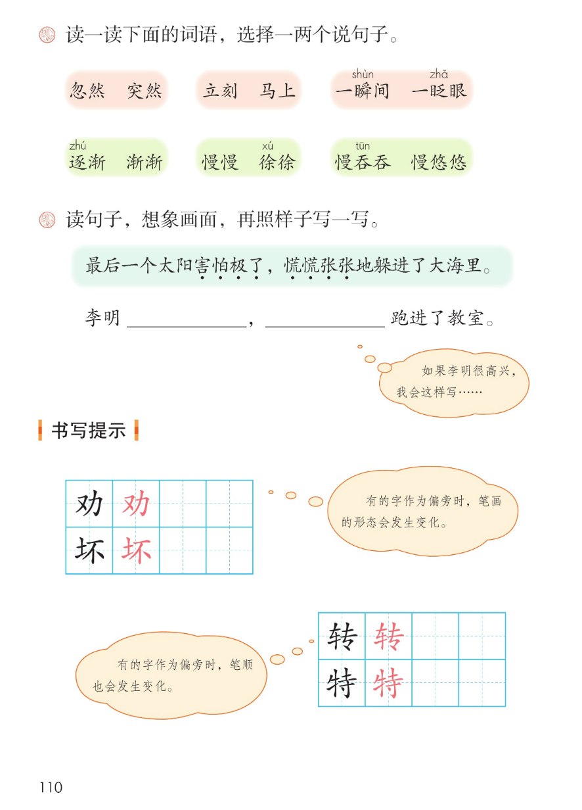
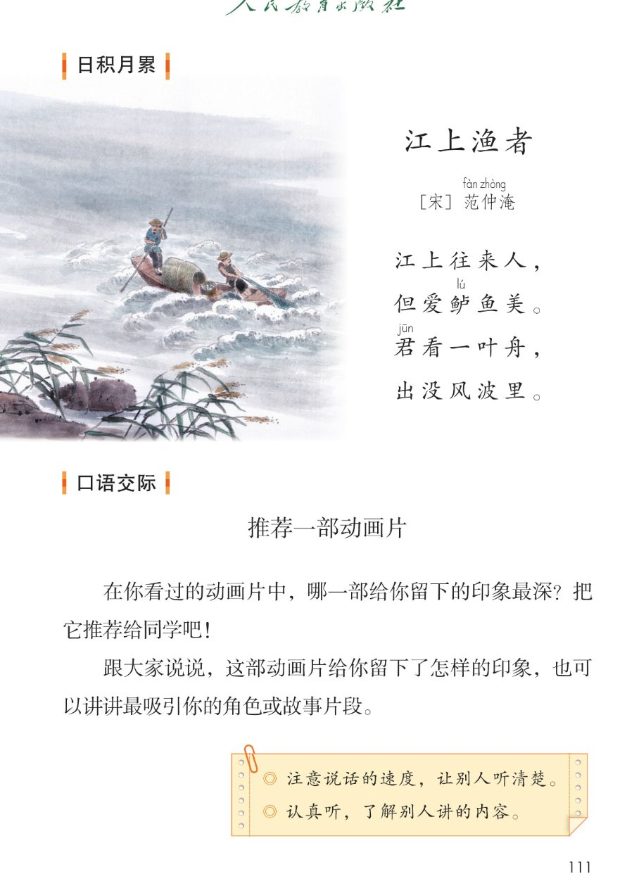
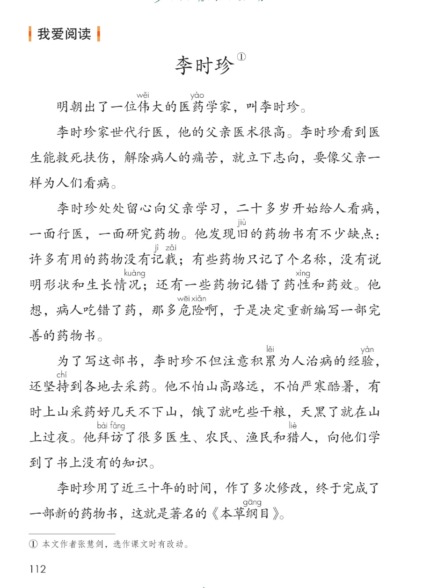

×
🔊 手机听不到声音怎么办？
① 先把手机
媒体音量调大 ，确认没开静音、没连蓝牙耳机；在微信里打开的，点右上角「⋯ → 用浏览器打开」。
② 还是没声音？到应用商店免费下载
Microsoft Edge 浏览器 （它自带朗读发声），用它打开本页面就能出声。
③ 换了 Edge 仍然没声音，说明这部手机的
硬件/系统不支持 网页朗读（多为老旧机型）；近几年买的新手机一般都能正常播放。
→ 打开声音自检
统编版 · 二年级下册 · 第八单元
第八单元 · 单元综合课件
语文园地八 · 书写提示 · 口语交际 · 日积月累 · 我爱阅读
金木水火土 10 字
会认 10 字
会写 2 字
江上渔者
闯关 8 题
这个单元讲了三个古代的传说故事： 羿射九日、黄帝的传说、大禹治水。
语文园地八把金木水火土的生字、偏旁的发现、书写提示、《江上渔者》和《李时珍》 收一收、用一用。点一下任一卡片或句子，就能听。
课本第 109 页
点词听读音，点蓝线行听全行
课件引导： 中间五个字是金、木、水、火、土 ，左右两组词语都和中间的偏旁 有关。读一读，认一认带拼音的字。
📌 课件补的参考：金字旁和金属有关，木字旁和树木有关，三点水和水有关，火字旁和火有关，提土旁和土有关。
钩gōu 铲chǎn 橙chéng 柿shì 源yuán 涨zhǎng 炬jù 灿càn 垮kuǎ 坟fén
📌 注音按课本照录：蓝线行 10 个字全部标音 （钩 gōu、铲 chǎn、橙 chéng、柿 shì、源 yuán、涨 zhǎng、炬 jù、灿 càn、垮 kuǎ、坟 fén）。
课本第 109 页两条蓝线之间那一行，按课本顺序
田字格：灿 烂（黑色是范字，红色是描红）
课本第 109~110 页
课本第 109 页
题目（课本原文）： 读一读，和同学交流你的发现 。
❄️ 冰 冷 冻 凉 ｜ 海 流 洒 滴
冰、冷、冻、凉 ——两点水（冫）海、流、洒、滴 ——三点水（氵）
🏮 神 祖 礼 福 ｜ 补 袜 衫shān 被
神、祖、礼、福 ——示字旁（礻）补、袜、衫、被 ——衣字旁（衤）
💬 课本气泡： 我知道带「冫 」的字大多跟冰、冷 有关，与带「氵 」的字不同。
💬 课本气泡： 我会注意区分偏旁容易混淆的字 ，了解它们的意思。
📌 课件补的参考：示字旁（礻）是一点，多和祭祀、福气有关；衣字旁（衤）是两点，和衣服有关。两个偏旁长得像，注意区分。
课本第 110 页
题目（课本原文）： 读一读下面的词语，选择一两个说句子 。
◇ 忽然 · 突然
◇ 立刻 · 马上
◇ 一瞬shūn 间 · 一眨zhǎ 眼
◇ 逐zhú 渐 · 渐渐
◇ 慢慢 · 徐xú 徐
◇ 慢吞tūn 吞 · 慢悠悠
📌 课件补的参考：第一行三个词多表示时间短、动作快 ，第二行三个词多表示速度慢、时间长 。注音按课本照录：瞬 shūn、眨 zhǎ、逐 zhú、徐 xú、吞 tūn；其余字课本未标音，不另加注。
课本第 110 页
题目（课本原文）： 读句子，想象画面 ，再照样子写一写 。
📖 例句（课本原文）： 最后一个太阳害怕 慌慌张张
📌 这句话出自本单元课文《羿射九日》。「害怕极了」写心情 ，「慌慌张张」是 A A B C 式叠词，写样子 。横线上可以先写心情，再用叠词写样子。
✏️ 李明 ， 跑进了教室。
💭 课本提示： 如果李明很高兴 ，我会这样写……
✅ 示例（答案不唯一）： 李明高兴极了 ，蹦蹦跳跳 地跑进了教室。
课本第 110 页
看范字，听课本怎么说
✍️ 劝 · 坏
劝 ——又字旁 + 力坏 ——提土旁 + 不课本告诉我们：有的字作为偏旁时，笔画的形态 会发生变化。
课件补的参考：又作偏旁，捺变成点；土作偏旁，横变成提。
✍️ 转 · 特
转 ——车字旁 + 专特 ——牛字旁 + 寺课本告诉我们：有的字作为偏旁时，笔顺 也会发生变化。
课件补的参考：车作偏旁，最后一笔横变成提；牛作偏旁，最后一笔竖变成提。
📌 书写提示不要求会写这四个字，重点是观察偏旁的变化 ，把字写规范。以上书写参考以教材和老师讲解为准。
课本第 111 页
点一句读一句
日积月累 · 江上渔者
[宋] 范fàn 仲zhòng 淹yān
诗意： 江上来来往往的人，只喜爱鲈鱼的味道鲜美。你看江中那只小小的渔船，在风浪中飘摇，一会儿露出水面，一会儿又被风浪淹没。诗人把吃鱼人和打鱼人放在一起对比 ，表达了对劳动人民的同情 。
📌 注音按课本逐处照录：范 fàn、仲 zhòng、淹 yān（作者名）、鲈 lú、君 jūn 五处；其余字课本未标音，不另加注。
🎯 背诵闯关（三步）
🔊 四句连起来读
第一步： 跟读，一句一句跟着读。第二步： 看提示背，只看每句的第一个字。第三步： 合上书背一遍，再对照课本。
课本第 111 页
说清楚，认真听
题目（课本原文）： 在你看过的动画片中，哪一部给你留下的印象最深 ？把它推荐给同学吧！怎样的印象 ，也可以讲讲最吸引你的角色 或故事片段 。
🗣️ 推荐讲什么
动画片的名字
给你留下了怎样的印象
最吸引你的角色或故事片段
💡 怎样推荐更好
先说出动画片的名字
讲清楚印象最深的地方
说说你为什么推荐它
📌 两张思路卡是课件补的参考 ，推荐的动画片由你自己选，答案不唯一。
📌 课本提醒： ① 注意说话的速度 ，让别人听清楚。② 认真听 ，了解别人讲的内容。
课本第 112 页
点一段读一段，注音按课本随文照录
读前想一想： 李时珍立下了什么志向 ？他是怎样用近三十年编成一部新的药物书 的？读一读，注意他做的事情。
李时珍为什么决定重新编写一部药物书？
💡 旧药物书的缺点： 许多有用的药物没有记载 ；有些只记了名称，没有说明形状和生长情况 ；还有的记错了药性和药效 ——病人吃错了药多危险啊。
和本单元连起来看： 为民除害（羿射九日）→ 用创造造福大家（黄帝的传说）→ 一心为民治水（大禹治水）→ 用近三十年编成《本草纲目》（李时珍）。他们都有一颗为别人 的心，做事要坚持 、要用心 。
词语积累（取自故事）
世代行医 ——家里一代一代都做医生救死扶伤 ——救活将死的，照顾受伤的完善 ——完备美好严寒酷暑 ——特别冷的冬天和特别热的夏天
这个故事告诉我们
处处留心，跟父亲学本领 。
不怕山高路远、严寒酷暑，坚持近三十年 。
编成《本草纲目》，造福后人 。
点选项就判对错，答完自动算分
已经答 0 题，答对 0 题。
点图放大

第 109 页 · 识字加油站 · 字词句运用第 1 题

第 110 页 · 字词句运用第 2、3 题 · 书写提示

第 111 页 · 日积月累《江上渔者》 · 口语交际

第 112 页 · 我爱阅读《李时珍》